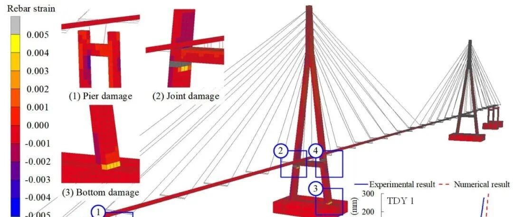

新论文：大跨斜拉桥的非线性模型更新及倒塌预测
论文链接：
论文1：

https://doi.org/10.1177/1475921720963868
论文2：

https://doi.org/10.1002/eqe.3341
0
太长不看版
大跨斜拉桥在强震下的抗震性能一直受到广泛关注，虽然已经有很多研究开展了大跨斜拉桥的强震响应模拟和倒塌分析，但是研究中采用的数值模型是否真的可以准确反映结构的非线性响应？模型倒塌分析结果的可信程度有多少？一直都是困扰研究人员很久的问题。本研究主要针对上述问题给出了答案。
本研究通过非线性模型更新获得了准确的大跨斜拉桥数值模型，结合有限元分析的重启动技术，基于更新后的模型成功实现了研究对象的倒塌预测，并与试验进行了对比（如下所示）。

研究主要解决的问题
两个论文主要解决了以下几方面的问题：
☝复杂结构数值模型的非线性更新（论文1）：
A. 目标函数怎么构建？
B. 更新算法如何选择？
C. 非线性更新的优势在哪里？
✌基于更新模型的倒塌预测（论文2）：
A. 模型可否准确反应真实结构的宏/微观响应？
B. 什么是预测？
C. 怎么开展倒塌模拟？
如果您也对这些问题感兴趣，不妨再花5分钟往下看~（一定要看完哦~）

2
研究对象
本文研究对象为苏通桥缩尺振动台试验模型（还是我们的老朋友），模型缩尺比为1:35。试验由同济大学完成，模型总长59.66米，塔高8.58米，采用4个振动台，结构底部固结，如图1所示，对应的有限元模型如图2，详情可以参见我们以前的工作(基于集群计算的大跨斜拉桥精细有限元模型更新)或者论文原文。

图1 苏通大桥振动台试验

图2 桥梁有限元模型
工况介绍
为了开展大跨斜拉桥的地震倒塌研究，试验的工况设计如表1所示，主要考虑场地波输入的工况，试验中地震动PGA以0.2g的间隔逐渐增大，直到桥梁发生倒塌（工况E15，PGA=1.3g）。试验的传感器布置如图3所示。
表1 试验工况布置


图3 试验传感器布置
3
复杂模型的非线性更新（论文1）
本文主要介绍如何实现大跨桥梁等复杂结构的非线性模型更新，包括目标函数、更新算法的选择，与线性更新结果的对比等。下面就让我们依次回答前文提出的问题：
目标函数
非线性模型更新主要基于结构的响应时程构建目标函数，通过计算位移时程的试验值和模拟值间的相关系数确定二者是否吻合，如下所示：


其中，X，Y为试验值和模拟值的数据数组；ETHA为一个测点处的相应误差，将其表示为1减相关系数的绝对值，由于相关系数为0至1之间的数，且越接近1则相关性越好，因此，ETHA越接近0表示模拟响应与试验吻合越好；n表示目标函数考虑了n个测点。我们的参数分析表明（图4），ETHA小于20%时，模拟值就可以和试验吻合良好。而由于目标函数表示为不同测点的ETHA平均值，考虑到平均值小于20%时，单个测点的ETHA不一定小于20%，因此，我们目标函数的收敛准则取为了10%。

图4 不同ETHA时模拟与试验结果对比
更新算法
复杂模型更新需要解决的一大问题是选择高效更新算法，秉持着“不服跑跑分”的原则，我们采用之前开发的基于集群计算的模型更新程序，对目前文献中常用的几种可以并行的模型更新算法进行了计算效率对比，包括多启动IP（Interior-point）方法、多启动SQP（Sequential Quadratic Programming）方法、遗传算法（GA）和粒子群算法（PSO）（更多更好的并行优化方法欢迎推荐）。由于只是效率对比，本文只选择了以前的工作(基于集群计算的大跨斜拉桥精细有限元模型更新)中的线性更新工况，不同算法的计算结果对比如表2所示。
表2 不同算法更新效率和结果对比

结果表明，粒子群算法在模型更新中有明显的效率优势，仅需要1.14小时就可以得到所需要的结果，效率高于遗传算法和另外两种多启动算法（由于粒子群算法和遗传算法在迭代的时候有一定的随机性，为了保证结果的正确性，我们通过多次计算反复验证了上述计算效率对比结果）。
为什么要非线性更新？
为了说明非线性更新的重要性，我们基于E7（PGA=0.5g）工况，分别采用线性更新和非线性更新得到的模型，计算位移响应和试验对比如图5-6所示（图5为典型测点对比，图6位所有测点的ETHA对比），可以看到线性更新的模型在结构响应进入非线性阶段后，响应明显没有非线性更新模型吻合，其ETHA也明显大于非线性更新的模型。

图5 典型测点位移时程对比

图6 所有测点ETHA对比
4
桥梁倒塌预测（论文2）
本文主要解决的问题是：我们是否能通过非线性更新模型预测桥梁结构在后续强震中的响应以及可能破坏模式？
为了回答上述问题，我们采用表1的E13（PGA=1.1g）工况开展模型非线性更新，在更新后的模型中输入E15的地震动，看看更新后模型是否能准确计算桥梁在E15地震下的响应（图7）。

图7 桥梁倒塌预测
模型可否准确反应真实结构的宏/微观响应
在开展倒塌预测前，我们首先对比了非线性更新模型计算的宏观响应（图8）和微观响应（图9）与试验结果的差异，确保了模型在复现已有工况测量响应时的准确性。

图10 宏观响应（位移响应）对比

图11 微观响应（钢筋应变）对比
桥梁倒塌预测
在确保了模型准确性的基础上，我们基于MSC.Marc的重启动计算方法，借助E13工况的计算结果，将后续E15地震动继续加载到更新后的模型上，直接计算桥梁在E15工况下的响应，如图12所示。这里采用重启动的一个好处是，避免计算其他未来工况（例如当你关心更新后的桥梁在其他地震动输入下的响应）时，对桥梁在E13工况下响应的重复计算。

图12 基于重启动技术的桥梁倒塌预测
怎么开展倒塌模拟？
对于桥梁的倒塌模拟，我们采用了目前已经十分成熟的生死单元技术（参阅图书：Lu XZ, Guan H, Earthquake Disaster Simulation of Civil Infrastructures: From Tall Buildings to Urban Areas, Singapore: Springer, 2017. ISBN 978-981-10-3086-4.），计算出了对象桥梁的倒塌全过程（顺便对比了典型测点位移的计算和试验结果），如图13所示。模拟的破坏模式与试验录像对比如图14，全过程动画也贴在本文的最上面啦~可以看到不管是位移响应还是倒塌破坏过程的预测，结果都还是比较准确的。

图13 桥梁倒塌过程模拟

图14 破坏与试验结果对比
5
结论与展望
以上就是本研究的全部内容啦。总结来说就是提出了适用于大型复杂结构有限元模型的非线性更新方法，开展了基于非线性更新模型的大跨斜拉桥倒塌预测研究，结果与试验吻合良好。当然为了防止“太长不看”，很多技术细节都在原文中更加详细叙述了(比如粒子群算法是咋回事，更新参数的选择，模型更新过程，重启动分析，倒塌模拟细节等等)，欢迎大家感兴趣的话下载原文并批评指正！
本研究同香港理工大学徐幼麟教授，同济大学李建中教授、管仲国教授及福州大学林楷奇博士合作完成，计算集群所用服务器由香港理工大学ITS（Information Technology Services）提供，更多相关内容欢迎下载原文。

林楷奇
---End--
相关研究
新论文：抗震&防连续倒塌：一种新型构造措施
长按识别二维码，关注我们的科研动态